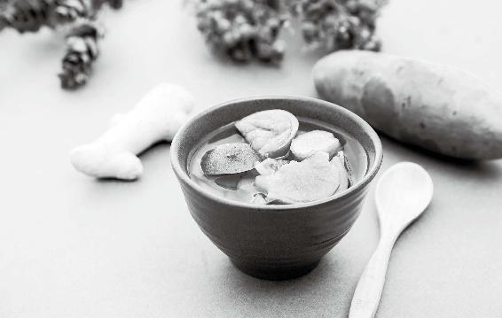

如果我们家里平时多备一些调料，再备一些常用的中草药，在疫情来时，就不会慌张了。
不管是用它们来做香包、药浴、枕头，还是做成坐垫——“治下部之病，以坐法为优”，都有增强抵抗力的作用。

如果我们家里平时多备一些调料，再备一些常用的中草药，在疫情来时，就不会慌张了。
不管是用它们来做香包、药浴、枕头，还是做成坐垫——“治下部之病，以坐法为优”，都有增强抵抗力的作用。
让家里、自己的身边始终有中药香味萦绕。中药香味才是真正的杀菌解毒的好东西。
我们虽然有现代的消毒水，但是说实在的，它在消灭细菌的时候，也可能伤害我们的身体。而中药不仅杀菌、抗病毒，还能帮助我们的身体提升正气。闻着它们的芳香气味，就是给我们的身体做保健。
我特别喜欢家里充盈着中药的香味，所以我家里常备很多中药， 而且中草药大部分是不会过期的。
如果家里实在没有中药，那么就在您家厨房里搜罗一些调味料吧。我相信每家厨房里都能找出调料来，只要是有辛香味的调料，都是可以用的。
肉桂、桂皮、八角、花椒、山柰、丁香、豆蔻、草果、香叶、白芷……这些都是厨房里常用的香味调料。所有这些辛香味的调料，都可以帮助我们的身体提升正气，也能解肉毒。
厨房里的很多调料，既是中药也是香料，是上好的香包制作材料。
我在前文中介绍了避疫病香包的配方，但在传染病流行时，很多人到药店里都买不到配方中的中药了。所以，我们可以在家里找各种各样辛香味的调料，有什么就用什么。
原料：川陈皮、丁香、山柰、白芷、艾叶等。
做法：将家里所有能找到的、带有芳香气味的调料，用料理机按1：1的比例打成粉，混合起来，装入香囊。
这个香包，您用厨房里现成的材料就可以自己做。由于都是日用调料，即使比例不对也不容易出错。
在疫情期间无法买药的情况下，如果家里平时就常备这些调料的话，我们要做这样一个防病香包是非常容易的。
如果家里有老人、幼儿、孕妇或身体较弱的人，可以多做几个，佩戴在胸前，同时放在他们的床头和枕边，这样就能随时随地做好防护。
今年疫情期间我都在家，几次出门买菜都会带上老师推荐的中药香包，后来香包味道淡了，药店又关门，于是就直接买了一款调味料，里面有13款香料，一盒45克，分成5份，很方便，味道也不错。
——40群Mary
前面讲过中药泡脚有助于防病。如果没有中药，可以用调料煮水泡脚。花椒、生姜、葱，都可以用来泡脚。（参见本书第97页“祛除寒湿的泡脚方”）
这三样调料都能够祛除我们身体的寒湿之气。
病毒在什么样的环境下最容易滋生呢？就是又湿又脏的环境。而我们每日用这些调料煮水泡脚，有助于祛除身体内的寒湿，帮助我们把体内的环境搞得更干净，让身体抵抗力更强。
花椒祛湿气的作用，在所有调料中是最强的。
北方的朋友如果受不了花椒的麻味，又想用花椒祛湿气，有一个好方法，就是用花椒水来泡脚。有些北方的朋友去了一趟南方，回来后会发现自己得湿疹了。这是因为北方人不习惯南方那种潮湿，这时候就可以用花椒水来泡脚。
花椒水泡脚能温和地祛除我们体内的湿气。
做法：拿一块棉布或者纱布包上一包花椒，用棉绳系好口，放在锅里用水煮30分钟，水就可以用来泡脚了。这个花椒包可以反复煮好几遍。
用花椒水泡脚还有一个作用，就是通经络。这是源自花椒的第二大作用——通气。经络畅通，气血流动，寒气湿气就更容易排出了。
我儿子连续低烧，喝了那么苦的中药，还是反反复复。后来我让老公用花椒煮水给儿子泡脚，还喝了点花椒水。结果泡脚后全身都是汗。当晚儿子睡得很踏实，早上起来说一身轻松，舒服了好多，体温 36.5℃，正常了，可以去上学了。老公说花了1 000块钱，折腾了10多天，到头来还不如一把花椒。
——2群遗失的美好
花椒有三大保健功效——祛湿气、通气、暖宫，它还有降脂的作用，对调理脂肪肝也有帮助。
花椒非常适合两类人食用：
第一类是不爱运动的人，总是坐着，体内的水分就堆积了。
第二类是爱吃补品的人，特别是一些爱吃比较昂贵的补品的人。这些补品往往很滋腻，不好消化，很容易补过头。
所以建议一些养尊处优的人士，还有办公室一族，做菜的时候可以经常放一些花椒来祛湿气。
中医开方时常写“川椒”，是指产自四川的花椒。川椒是一味道地中药。
川椒入药，内服可以调治积食停饮、心腹冷痛、呕吐、噫气、呃逆、咳嗽、风寒湿痹、泄泻、疝气疼痛等，外用可以调治蛲虫、湿疹等。
唐代药王孙思邈的名著《千金方》中，便有“蜀椒汤”，调治女性产后受寒引起的心痛病。
家里厨房一定要备点花椒。其可以作为调料、药茶，还可以救急止痛、泡脚祛湿，还能防粮食生虫，用处特别多。
古人用花椒泡成药酒，称为“椒酒”，认为其可以医治百病。
现在人们可能接受不了这种口味，但可以用它来缓解蛀牙引起的牙痛。
道地川椒的麻味很强烈，嚼一粒口腔内舌头就会发麻，这是正常现象。
原料：纯粮白酒、川椒。
做法：用白酒煮川椒，含在口中。
原料：花椒 5〜7 粒，小黄姜 3 克，红枣 6 个，红糖 2 小块。
做法：沸水冲泡，闷10分钟后饮用。可以反复冲泡。
把花椒用纱布包起来放到大米里，可以防止大米生虫。
花椒有青、红两种颜色。
青花椒其实不是花椒，而是花椒的近亲，叫作藤椒。它的果实成熟以后依然是青色的。
青花椒跟花椒的味道很接近，但花椒的麻香比较醇厚，而青花椒则具有一种清新的辛香味。
青花椒有通窍的作用，还能疏解肝气，适合患有高血脂、脂肪肝的人调理身体。
红花椒：麻香醇厚，暖宫除湿。
青花椒：辛香清爽，疏肝降脂。
由于现在的人湿气越来越重，所以吃花椒的人也越来越多。花椒的价格贵了，伪劣品也多了。
有四川的朋友尝了道地的花椒之后感叹：原来自己吃了几十年的假花椒。
市场上花椒掺假的现象非常严重。比如，在好花椒中掺杂榨过油的花椒；在好花椒中掺杂次一些的花椒来冒充好品种，或是冒充道地产地花椒，用工业盐浸泡来增加重量；将各种看起来像花椒的植物种子染色后掺入真花椒，用致癌物染色处理，提高卖相……
·尝：上等的花椒，一粒入嘴就会使口腔和舌头全部麻木，而且有鲜香味。次等的花椒，麻味单薄，鲜味不足。
·闻：上等的花椒香气突出，次等的花椒香气淡薄。
·价格：掺假的花椒和真花椒相比，价格能相差5倍以上。
·称：真花椒的分量很轻，2两（100克）就能装满一瓶。掺假增重的花椒就会更重。
·看品种：花椒有好几个品种，其中以大红袍和子母椒最好。
大红袍的颜色是红色的，颗粒很大，麻味浓。
子母椒的颜色有一点儿发紫，在每粒花椒的底部会附生一粒芝麻大小的子花椒（晾晒时会脱落）。这种花椒麻味不如大红袍，但是香味胜之。
·看产地：花椒正宗的产地是四川的汉源。那里从近2 000年前的汉代开始，就出产全中国最好的花椒，麻香味佳。由于历朝岁贡皇室，所以称为“贡椒”，中外闻名。可惜产量低，每年一出来就被一抢而空，在汉源当地也难得买到百分百的道地真货，多数以外地花椒掺杂冒充。
做菜经常用到大葱或小葱来调味，但如果只把葱当调料，那真是可惜了！
感冒时，在姜汤中加入葱白连须可通鼻塞。
做蛋白质和油脂含量丰富的菜时搭配一点葱须，可以解油腻，助消化，还有降血脂的作用。
原料：葱须、豆腐丝、盐、糖、酱油、辣椒油。
做法：1.葱须洗净，加盐揉透，腌制20分钟。
2.和豆腐丝一起拌匀，加少许糖提鲜，再放酱油、辣椒油调味。
功效：有开胃、散寒、防感冒的作用。
做饭时如果不小心切伤手指，流血，马上撕下葱膜来敷伤口，不仅能止血，还有杀菌消炎、防止伤口感染的作用。
葱膜稍微撕薄一点，里面的黏液多的时候，它自己就可以粘住，相当于天然创可贴。
小葱不容易保存，买回家后，可以用一个有土的花盆，把土挖松，将小葱插进去种上。
种好后，第一次浇水要浇透，放到阳台或窗台上，不需要阳光直射就能长。
每次做菜时，掐下一点来用，剩下的部分又会再长，这样家里就一直都有小葱吃了。
肉桂是厨房里常用的调料，也是很好用的中药。医圣张仲景就善用肉桂来治各种病。
肉桂温通全身经脉，祛除寒瘀，使人全身温暖，却又不易上虚火。这是因为肉桂有引火归元的作用，可以把人体的虚火往下引，防止上火。
我把肉桂比作“补肾药中的君子”。它的药效明显，却又温厚，补得很稳，让人吃得踏实。
肉桂
功效：补火助阳，引火归元，散寒止痛，温通经脉。
主治：阳痿宫冷，腰膝冷痛，肾虚作喘，虚阳上浮，眩晕目赤， 心腹冷痛，虚寒吐泻，寒疝腹痛，痛经经闭。
——《中国药典》
肉桂还有这些作用：
① 抗炎；
② 镇咳平喘；
③ 调节血糖：肉桂提取物被称为“胰岛素强化因子”；
④ 防治帕金森病；
⑤ 改善心脏功能：肉桂酸常用于生产冠心病药物“心可安”；
⑥ 促进皮肤色素代谢；
⑦ 促进头发生长。
肉桂经常与桂皮混杂，要注意辨认。
桂树常见的有8种，但只有2种桂树的皮才可以作为肉桂入药。
进口肉桂一般都不是真正的肉桂，而是桂皮。例如著名的锡兰肉桂，是昂贵的香料，但它也是桂皮。
真正的肉桂，桂皮醛含量必须达到1.5%以上，补肾降糖效果才好。
如何挑出能治病的肉桂？
① 肉桂比较厚，桂皮比较薄。
② 肉桂颜色发红，桂皮为棕色。
③ 在内侧用指甲划一道，出油多的是肉桂。油脂越多，桂皮醛含量越高，药效也就更强。
④ 肉桂闻起来有甜香的暖味，桂皮有种凉凉、刺鼻的辛香味道。
中药方中的肉桂，不能用桂皮代替。
只有在调理胃的问题时，肉桂和桂皮才可以混用。
肉桂：暖胃止胃痛。
桂皮：理气止胃痛。
细分起来的区别是这样：胃寒引起的胃痛，用肉桂更好；有胃神经官能症，生气时会胃痛，用桂皮更好。
原料：肉桂或桂皮2块，苹果1个，红糖适量。
做法：1.将 2 块肉桂或桂皮，放入半锅水中煮。
2.15 分钟后，待桂皮煮出味道，放入1个切好的苹果。
3.再煮3分钟，放入适量红糖，趁热饮用。
功效：强健脾胃，调理胃寒、肝胃不和引起的胃痛。
① 肾阳虚，怕冷、手脚冰凉的人；
② 后腰和膝盖经常冷痛的人；
③ 宫寒、痛经的女性；
④ 糖尿患者。
肉桂可以提高胰岛素水平，对糖尿病患者有辅助治疗作用。
吃糖或甜食，放1勺肉桂粉，对餐后血糖升高有减缓作用。
姜，是小时候母亲教给我的第一味中药。
2008 年有了博客，我才有机会把这些口传的心法广为分享——到今年（2020年）刚好12 年了。12年前，很多人对于姜的认知，仅限于感冒喝个姜汤。现在全民都在吃姜保健了。传统的养生学日益复兴，是中华之福。今昔对比，备感生在这个时代的幸运。
关于姜，我在《回家吃饭的智慧》里讲了很多，这里不再重复， 只简单总结一下：关于姜，一定要知道的7件事。
姜皮本身就是一味中药。姜肉性热，姜皮性凉；姜肉发汗，姜皮止汗。去皮吃还是带皮吃，根据具体情况来定。感冒喝姜汤、吃大闸蟹用姜，去皮。平时做菜、喝姜枣茶，不去皮。
早上吃姜，保健养生的效果最好，因为姜最擅宣发阳明经的阳气。早晨正是气血流注阳明胃经之时，此时吃姜，正好生发胃气，促进消化。而且姜性辛温，能加快血液流动，有提神的功效。
中午以后就应该不吃姜了，否则容易伤肺。
中国人养生，特别讲究顺应天时。
“早吃姜，补药汤。午吃姜，痨病戕。晚吃姜，见阎王。”
这是外婆传下来的歌诀。这个道理，我家几代人遵行不悖，受益良多。
晚上吃姜，有几大害：
第一，使人兴奋，无法安睡。第二，刺激神经，影响心脏功能。第三，郁积内火，耗肺阴，伤肾水。
晚上喝酒，以姜菜下酒，大害！等于吃慢性毒药。
夏天适合多吃姜，秋天则不适合多吃姜。
居家过日子，是不可一日无姜的。
做菜需要放姜；若是受风寒，马上喝姜汤；吃生冷食物后腹泻，用姜泡绿茶喝；胃寒、胃口不佳，喝姜枣茶……有姜备着，一些小病就好治了。
前面所讲的午后不吃姜、秋不食姜，都是指单独吃姜。
平时做菜，该放姜还是要放的，不分早晚和季节，因为它作为调料，是与其他食物搭配使用的。
感冒喝姜汤，是治病，也不用分早晚和季节。
我一直有个习惯，出门时包里装几块姜糖。路途中遇风、遇寒， 或是吃了什么生冷食物，马上吃两块姜糖救急，百用百灵。
2018年夏天，我在西北各地录外景节目，每日不是在烈日下就是在暴雨中，录完以后还要坐车，在山路上颠簸好几个小时，每个人都疲惫不堪，有人感觉头痛难受不堪，我拿出自制的姜枣四物红糖，大家如获至宝。有个女孩甚至珍惜地把一块糖分成两半，准备把另一半留到关键时刻“续命”。
辛夷，又名木兰，是玉兰的近亲植物。木兰的花骨朵，就被做成了中药辛夷，它对于调治鼻炎有很好的效果。
换季的时候，很多人不仅会担心出现肺炎症状，还担心可能会出现鼻炎的症状，这时就可以用辛夷。
用辛夷煮水，再打一个鸡蛋进去，做成荷包蛋，然后喝汤，吃鸡蛋。不要吃辛夷，因为辛夷是很难吃的。
但是辛夷的味道非常好闻，是那种淡雅的花香。它可以通鼻子，可用来调理风寒引起的鼻炎。所以它也是我做调理鼻炎的药枕时会用到的一种原料。
如果家里有人有鼻炎，或者打呼噜的话，就可以用辛夷，再配上一些芳香化湿、通鼻窍的中药做成药枕，让他睡觉时用。
治疗新冠肺炎的药方中采用的药食同源中药解析
新冠肺炎疫情期间，国家卫健委发布了治疗的中药方，无论是治疗轻症、普通症还是重症，各药方所用的中药，半数也是药食同源的， 特别是下面的这些，都是平时可以吃的，大家在饮食中也可以常用。
草果
草果是常用的炖肉调料，温胃，祛湿，化浊。
苍术
经常用避疫香包（防流感香包）的朋友都熟悉它独特的香味， 我的每一个防疫病配方里都有它，可健脾祛湿、抗病毒，用来涂抹皮肤，防止皮肤病也很有效。
桔梗
化痰的药。朝鲜族用它做咸菜吃。
牛蒡
咽喉肿痛、胃火便秘用它效果很好。它也是日常排毒的食材——防癌明星。
甘草
补气，润肺，调和药性……好处太多了。
桑白皮
桑树的根皮。我们平时用得更多的是桑叶——“人参热补，桑叶清补”，桑叶不仅滋补，也是治疗风热感冒的。
金银花
清热解毒。夏季抗病毒，全家人可以经常喝金银花甘草茶来预防。
到了新冠肺炎的重症期，就是“内闭外脱”，国家卫健委推荐用的是人参、黑顺片（附子）、山茱萸，来送服苏合香丸，或者安宫牛黄丸。
苏合香
我在前文中给大家分享的防流感辟疫香包配方，里边就用到了苏合香。可惜的是，新冠肺炎疫情暴发后，很多朋友告诉我，他们去药店想去配这个香包，却已经买不到苏合香了。
苏合香丸在重症期用来抢救患者，也是非常好的。平时我们只须外用，放在香包里防病。
山茱萸
山茱萸是六味地黄丸的成分之一，也是《吃法决定活法》书中推荐给老年人补肾的食材——专补人体之“漏”，在平时也是可以吃的。炖肉汤时，可以抓一把山茱萸放进去，或者泡水喝也可以。我儿子是当干果来吃，他不怕酸。
我家在秋冬季，全家人都喝山茱萸汤。它能够帮助我们的身体固住精气，而只要能够固住精气，身体抵抗力就会增强。
针对新冠肺炎恢复期肺脾气虚的情况，国家卫健委的诊疗方案里面讲的是用法半夏、陈皮、党参、炙黄芪、茯苓、藿香、砂仁这几种材料。在这个诊疗方案里，除了法半夏（半夏直接去除外皮后晒干，称为生半夏。生半夏有毒。用甘草、石灰炮制去毒后，称为法半夏。中药半夏燥湿化痰的功效特别好，但是它有一点毒性，所以古人用各种方法将它进行炮制，以去除毒性。半夏药材按照炮制方法不同分为：生半夏——直接去除外皮后晒干，生半夏有毒；法半夏——用甘草、石灰炮制去毒；清半夏——用白矾炮制去毒；姜半夏——用生姜、白矾炮制去毒），其他几种材料也都是药食同源的。
党参、黄芪
它们都是我们平时常用的保健食材，补气，增强体质。
茯苓
我建议大家每日都吃茯苓，它的健脾祛湿效果非常好。
茯苓其实跟灵芝一样是菌类。
我建议大家多吃茯苓，特别是在疫情高发时期。我们多吃菌类，不论是茯苓，还是灵芝、香菇等，都是能够帮助我们增强抵抗力的。
藿香
藿香正气水的主药，平时不管是内服还是外用，都能用得到，用来做香包、沐浴包都是可以的。
砂仁
它也是我们平时用来做炖肉的调料。我家厨房里也常备砂仁。
陈皮
陈皮，在处方中配上法半夏和茯苓，是我们传统的二陈汤（半夏、陈皮、茯苓、甘草）的方子，它能燥湿化痰，脾胃湿气非常重的人是可以用到二陈汤的。
以上这些，也是我建议大家平时在家里多准备的中药。在这样的特殊时期，我们都可以用得上。
我自己收集了一些川橘皮，止咳效果非常明显。女儿感冒咳嗽，自己主动要我煮姜汤陈皮红糖水喝，一般两碗见效。
——杨志花